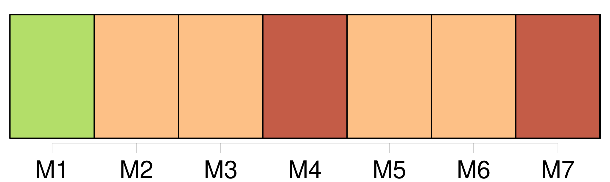

Longueur nb maillons : 9 mentions |
  |
« Puis voici que pour la première fois [deux amants] se trouvent chair à chair dans ce tabernacle de la vie. [Ils] tremblent, mais transportés d'allégresse, [ils] se sentent délicieusement l'un près de l'autre ; et, peu à peu, [leurs] bouches s'approchent. Ce baiser divin [les] confond, ce baiser, porte du ciel terrestre, ce baiser qui chante les délices humaines, qui [les] promet toutes, les annonce et les devance. Et [leur] lit s'émeut comme une mer soulevée, ploie et murmure, semble lui -même animé, joyeux, car sur lui le délirant mystère d'amour s'accomplit.
Quoi de plus suave, de plus parfait en ce monde que ces étreintes faisant de deux êtres un seul, et donnant à chacun, dans le même moment, la même pensée, la même attente et la même joie éperdue qui descend en [eux] comme un feu dévorant et céleste? [1 phrases]
Et quand au lit nous serons Entrelacés, nous ferons Les lascifs, selon les guises [Des amants] qui librement Pratiquent folâtrement Sous les draps cent mignardises |
La ressource peut être téléchargée sur la page Ortolang
Si vous avez des questions ou vous voyez des erreurs, merci d'envoyer un mail à silvia.federzoni89@gmail.com
Site développé par S. Federzoni (contact)